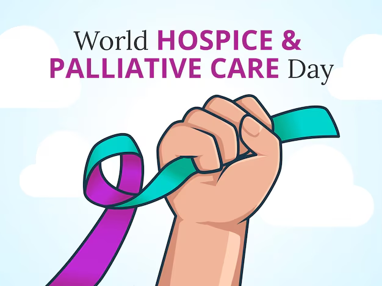
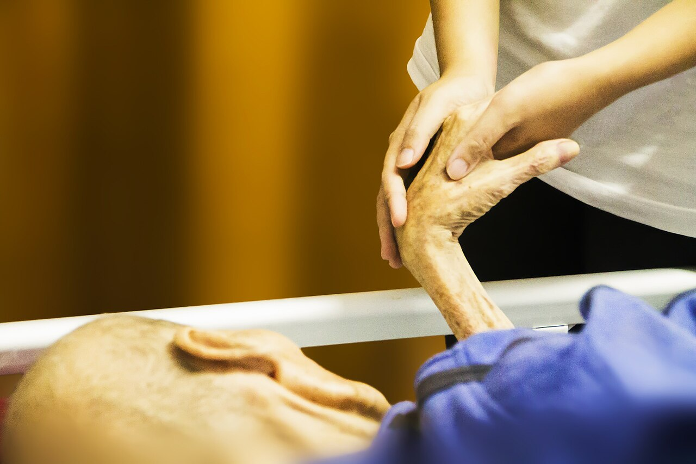
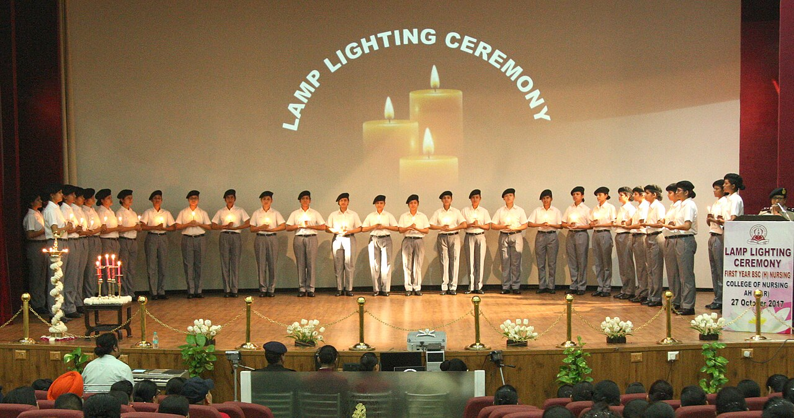
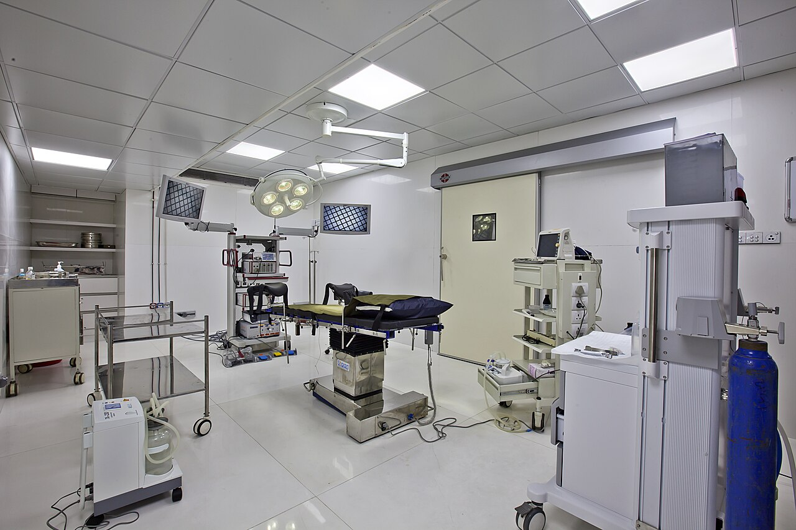
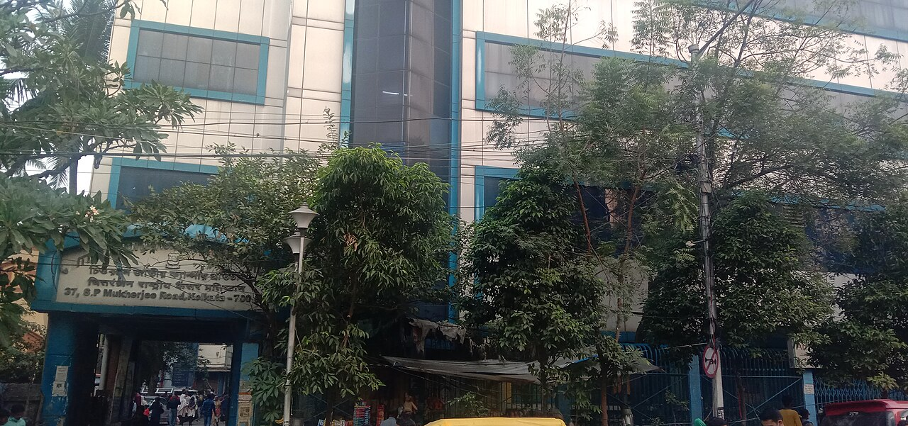
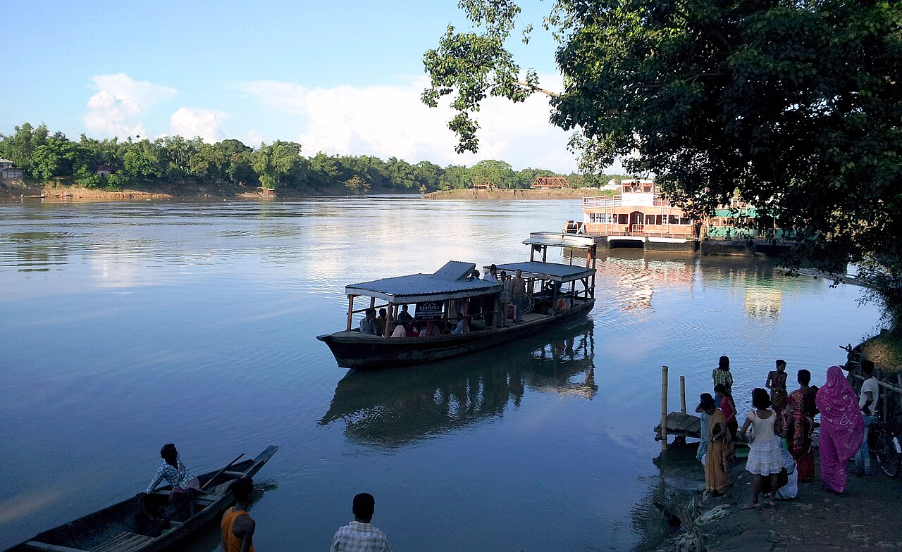
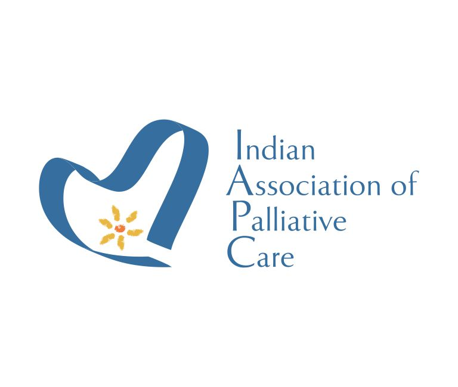
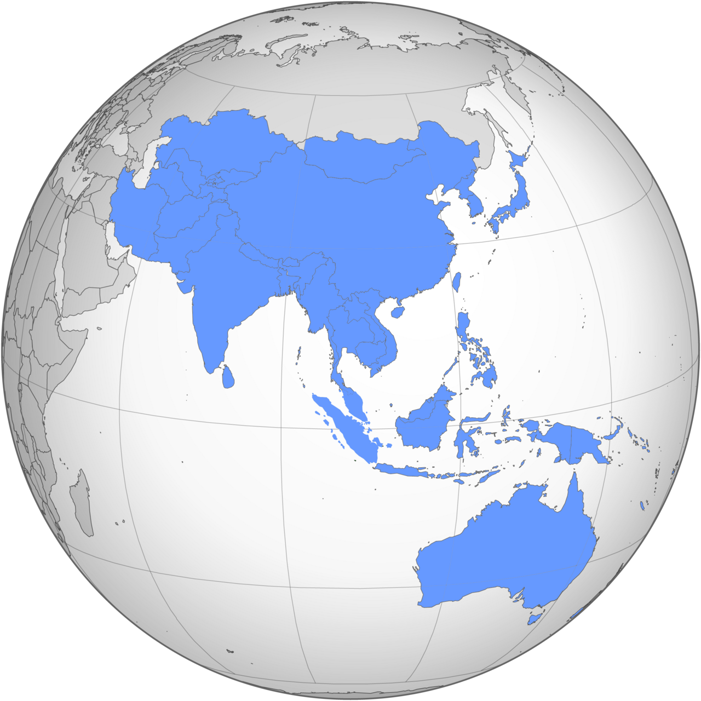

The Department of Palliative Medicine organizes a variety of activities, including educational programs for healthcare professionals and community outreach initiatives to raise awareness about palliative care.
Conferences, trainings and webinars in palliative care for healthcare professionals, volunteers and everyone who cares for people with serious illness. Contact each organizer for registration details.

Focuses on pain management and community hospice access.

Clinical discussions on honoring cultural values in palliative care.

Specialized training modules for palliative care nurses.

"Beyond Rescue: Integrating Palliative Care in Anaesthesia, Pain and Critical Care."

Managing pain in COPD, chronic kidney disease (CKD), and heart failure.

Community volunteer training and non-oncology palliative care.
"Reimagining Psychosocial and Spiritual Interventions in Holistic Clinical Care."

Workshops Feb 18 · Main conference Feb 19–21.
"Humanising High-Tech Medicine where Algorithm Meets Empathy."

Clinical updates, home care expansion, and Asia-Pacific palliative care policies.
Highlights from activities organized by our department.
Event photos from Wikimedia Commons: Hospice by truthseeker08 (CC0); Lamp lighting ceremony by Ministry of Defence, Government of India (GODL-India); Operating theatre by Dr. Jayesh Amin (CC BY-SA 3.0); Chittaranjan National Cancer Institute by Anupamdutta73 (CC BY-SA 3.0); Barak River in Silchar by Konwar.anupam (CC BY-SA 3.0); Prayer candles and cross by Lucy Toner (CC0); Asia and the Pacific by Alvoradaking (CC BY-SA 4.0).